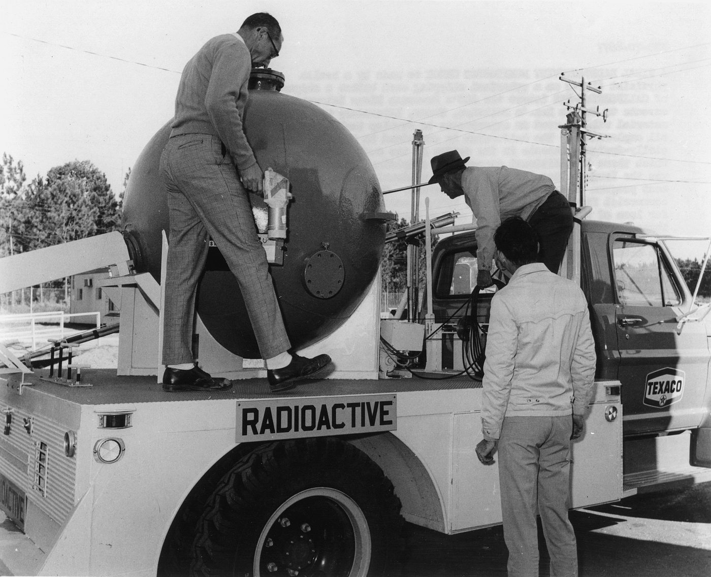
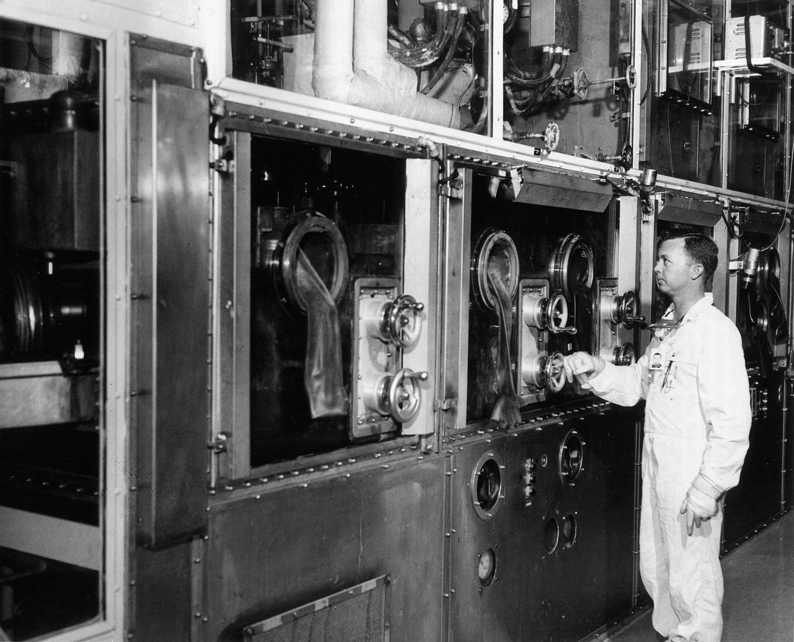
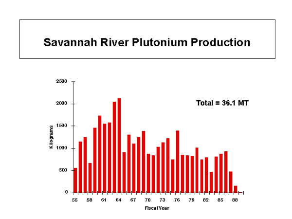

A plant that measured itself
Through the 1970s the plant reported its releases. Du Pont's semiannual monitoring summaries were reprinted in the federal Radiation Data and Reports (DL), and its annual environmental reports run from 1974 on OSTI (WB: OSTI 4174736). In 1972 the plant became the first National Environmental Research Park (WB: srs.gov 1970s).

.jpg){kind=link}
The ecology laboratory's work on reactor cooling water began in 1969, once satellite imagery had made the water temperatures impossible to keep secret (WB: Ecological Society of America), and became the Thermal Ecology symposia (IA). The first on-site anti-nuclear protest came in 1979 (WB: srs.gov 1970s).
Radioactive tritium was the plant's largest routine release, averaging more than half a million curies a year to the air in 1974–77 (WB: OSTI 6206385). Single accidents added to it. On May 2, 1974, some 479,000 curies of tritium gas escaped from a stack (WB: OSTI 7100365), a release a Lawrence Livermore report on the national emergency-response system's tracking of it called a small quantity, not dangerous to the public (WB: OSTI 7282426).
In September 1984 another 43,800 curies, mostly tritium oxide, drifted toward New Ellenton and Aiken (WB: OSTI 6417935), and on July 31, 1987, a further 172,000 curies were released (WB: OSTI 7130595).
Downstream, the plant tested the tritium in the drinking water of the Beaufort-Jasper Water Authority in South Carolina and the Port Wentworth plant in Georgia every month, and screened the 865 deer and 8 hogs killed in its 1971 hunt for radioactive cesium-137 before releasing them to hunters (DL).
The hunts still go on today; see Chapter 4.
L-Reactor comes back
The Reagan-era buildup needed more radioactive plutonium. In 1982 the plant lowered the Pu-240 content of its product to blend with Hanford's (WB: SRS at Fifty ch. 19), and DOE moved to restart L reactor, idle since 1968, on an environmental assessment rather than a full impact statement (WB: OSTI 5060401).

.jpg){kind=link}
The Natural Resources Defense Council sued. On July 15, 1983, the district court held that the restart needed an environmental impact statement but would not stop it (WB: Environmental Law Reporter). The Senate Armed Services Committee had already held a field hearing in North Augusta that February (DL).
There Georgia's Senator Mattingly, calling the Tuscaloosa aquifer under the site the main source of water for Georgia, won an assurance from DOE that burying the plant's high-level waste in the bedrock beneath it would not be brought up again, and the Natural Resources Defense Council's witness pointed to cesium contamination off the site, just downstream of where Steel Creek enters the river (DL).
South Carolina and Georgia had both opposed bedrock disposal (IA). The final EIS came in May 1984 (WB: DOE); it and the other impact statements of the period are gathered in one archive.org upload (IA). L restarted in 1985. C reactor shut down that year, permanently from 1986 (WB: srs.gov 1980s).
Outside critics read the record differently from the operator. Deadly Crop in the Tank Farm (1986) assessed the high-level waste tanks (WB: IEER); Du Pont published a rebuttal (WB: OSTI 5881523). The Washington Post described aging reactors carrying the buildup, one down for a cracked vessel — a clipping that survives in the CIA's files (IA).
Under the ground
What the plant had poured into its seepage basins came back through the groundwater. Reviewing permit applications in 1981, South Carolina's health and environment department judged that the volumes sent to the basins strongly suggested groundwater problems; in 1983 the plant reported that a well supplying drinking water to its own employees was contaminated, and two more followed.
The department's deputy commissioner told Senator Glenn's committee in 1987 that plant staff had at first been reluctant to accept the state's regulatory authority (DL).
GAO found solvents in the groundwater under the M Area fuel plant at more than 30,000 times proposed drinking-water standards and tritium at the separations areas at more than 2,500 times; DOE answered that the contamination stayed under federal land and posed no threat to the public (IA: GAO 1986).
By 1991 the Office of Technology Assessment reported an EPA finding that the pump-and-treat system meant to clean the M Area plume was not adequately designed to reach its goal (DL).
1987–1988: the reactors stop
A National Academy of Sciences panel reviewed safety at the defense production reactors for DOE in 1987 (IA). Du Pont announced that year that it would not stay on as operator (WB: srs.gov 1980s). In February 1988 a Senate subcommittee heard DOE, the plant manager and Du Pont on why L reactor's power had been cut (IA).
That year an internal list of thirty significant reactor incidents became public. The official history presents the report as meant to show safety improving (WB: ch. 19); the Senate investigator who obtained it remembers it as evidence of concealment (WB: Alliance for Nuclear Accountability).
The reactors went down one after another — K in April, L in June, P in August — over emergency cooling concerns (WB: ch. 19). On September 30, 1988, the General Accounting Office told Senator Glenn's and Representative Synar's committees how P reactor's start-up had gone ahead despite a reactivity shortfall larger than any the plant had seen (DL; WB: gao.gov).
Glenn's bill to put the weapons plants under outside safety oversight was already in hearings (DL). The next day, October 1, the New York Times put the story on its front page: severe accidents at the plant, kept secret for up to 31 years, at all five reactors, documented in a 19-page memorandum from a plant supervisor to his superiors at Du Pont (WB: New York Times). By November the paper was asking how Congress had missed the signs (WB: New York Times).
Plant to Site
In April 1989 the Westinghouse Savannah River Company took over from Du Pont (WB: ch. 19). The same year the Savannah River Plant became the Savannah River Site and went on the National Priorities List (WB: srs.gov 1980s). GAO's 1989 testimony set the site inside a complex-wide picture of cleanup and modernization problems (DL).


That August Senator Glenn argued that DOE's research on the health of its own workers had been subordinated to production, and Senator Kohl called for removing the apparent conflict of interest and said he was open to moving that research to Health and Human Services; the record included a 1988 study reporting a significant excess of leukemia deaths among hourly Savannah River workers hired before 1955 (IA: Senate hearing, 1989). The later dose reconstruction was run by the CDC (WB: CDC).
DOE still meant to restart. In February 1991 it planned K for that summer and L for 1992, at $3.2 billion for restart and operations (WB: GAO RCED-91-95), and issued safety evaluations for K (WB: OSTI 5625511). In December 1991 tritium from K reactor reached the Savannah River (WB: OSTI 5281815; WB: OSTI 10179303).
GAO had warned in 1989 that DOE had only begun to address earthquake weaknesses that had existed at the site for years, and that the seismic review behind P reactor's 1988 restart used a less stringent standard than the Nuclear Regulatory Commission's (IA: GAO 1989).
In March 1991 a depression found on the downstream face of the Par Pond dam led the site to lower the reservoir about 19 feet that summer, exposing some 1,300 acres of cesium-contaminated sediment and sending tritium and cesium into the river (WB: OSTI 7247383); the exposed bed became a Superfund interim action (WB: OSTI 10192315).
A 1998 DOE notice dates the leak to 1992 (DL). In 1992 K went critical for a test run and was then shut down permanently (WB: srs.gov 1990s). Bomb making at Savannah River was over.
What it had released was reconstructed later. The CDC's dose reconstruction counted about 3,000 release incidents involving tritium between 1954 and 1992 (WB: CDC Phase II); cdc.gov now refuses automated requests, and the reports are reachable in Wayback.